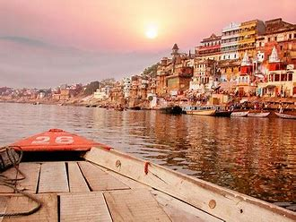
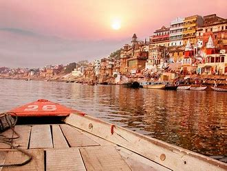

Varanasi also Banaras or Benares, and Kashi is a city on the Ganges river in
northern
India that has a central place in the traditions of pilgrimage, death, and mourning in the Hindu
world.The city has a syncretic tradition of Muslim artisanship that underpins its religious
tourism.Located in the middle-Ganges valley in the southeastern part of the state of Uttar Pradesh,
Varanasi lies on the left bank of the river. It is 692 kilometres (430 mi) to the southeast of
India's
capital New Delhi and 320 kilometres (200 mi) to the east of the state capital, Lucknow. It lies 121
kilometres (75 mi) downstream of Prayagraj, where the confluence with the Yamuna river is another
major
Hindu pilgrimage site.
Varanasi is one of the world's oldest continually inhabited cities.Kashi, its ancient name, was
associated with a kingdom of the same name of 2,500 years ago. The Lion capital of Ashoka at nearby
Sarnath
has been interpreted to be a commemoration of the Buddha's first sermon there in the fifth century
BCE.In the 8th century, Adi Shankara established the worship of Shiva as an official sect of
Varanasi. Tulsidas wrote his Awadhi language epic, the Ramcharitmanas, a Bhakti movement reworking
of
the
Sanskrit Ramayana, in Varanasi. Several other major figures of the Bhakti movement were born in
Varanasi,
including Kabir and Ravidas.In the 16th century, Rajput nobles in the service of the courts and
armies
of the Mughal emperor Akbar, sponsored the building or further enhancement of the major Shiva temple
in
the
city; they also built other temples, all displaying an empire-wide architectural style.Under the
Treaty of Faizabad, the East India Company acquired Benares in 1775,the city later successively
becoming a part of the Benares Division in the Ceded and Conquered Provinces, the North-Western
Provinces,
and the United Provinces, and after India's independence of Uttar Pradesh.
Silk weaving, carpets and crafts and tourism employ a significant number of the local population, as
do
the
Banaras Locomotive Works and Bharat Heavy Electricals. The city is known worldwide for its many
ghats,
steps
leading down the steep river bank to the water, where pilgrims perform rituals. Of particular note
are
the
Dashashwamedh Ghat, the Panchganga Ghat, the Manikarnika Ghat, and the Harishchandra Ghat, the last
two
being where Hindus cremate their dead. The Hindu genealogy registers at Varanasi are kept here.
Among
the
notable temples in Varanasi are Kashi Vishwanath Temple of Shiva, the Sankat Mochan Hanuman Temple,
and
the
Durga Temple.
The city has long been an educational and musical centre: many prominent Indian philosophers, poets,
writers, and musicians live or have lived in the city, and it was the place where the Benares
gharana
form
of Hindustani classical music was developed. In the 20th-century the Hindi-Urdu writer Premchand and
the
shehnai player Bismillah Khan were associated with the city. India's oldest Sanskrit college, the
Benares
Sanskrit College, was founded during East India Company rule in 1791. Later education in Benares was
greatly
influenced by the rise of Indian nationalism in the late 19th-century. Annie Besant founded the
Central
Hindu College in 1898. In 1916, she and Madan Mohan Malviya founded the Banaras Hindu University,
India's
first modern residential university.
Kashi Vidyapith was established in 1921, a response to
Mahatma
Gandhi's
Non-cooperation movement.Traditional etymology links "Varanasi" to the names of two Ganges
tributaries
forming the city's borders: Varuna, still flowing in northern Varanasi, and Assi, today a small
stream
in
the southern part of the city, near Assi Ghat. The old city is located on the north shores of the
Ganges,
bounded by Varuna and Assi.
In the Mahabharata the city is referred to as Kāśī (काशी: Kashi) from the Sanskrit verbal root kaś-
"to
shine", making Varanasi known as "City of Light",the "luminous city as an eminent seat of
learning".The name was also used by pilgrims dating from Buddha's days.
Hindu religious texts use many epithets in Sanskrit to refer to Varanasi, such as Kāśikā
(transl. "the
shining one"), Avimukta (transl. "never forsaken by Shiva"), Ānandakānana (transl. "the forest of
bliss"),
Rudravāsa (transl. "the place where Rudra resides"), and Mahāshmashāna (transl. "the great cremation
ground").According to Hindu mythology, Varanasi was founded by Shiva,one of three principal deities
along with Brahma and Vishnu. During a conflict between Brahma and Shiva, one of Brahma's five heads
was
torn off by Shiva. As was the custom, the victor carried the slain adversary's head in his hand and
let
it
hang down from his hand as an act of ignominy, and a sign of his own bravery. A bridle was also put
into
the
mouth. Shiva thus dishonoured Brahma's head, and kept it with him at all times. When he came to the
city
of
Varanasi in this state, the hanging head of Brahma dropped from Shiva's hand and disappeared in the
ground.
Varanasi is therefore considered an extremely holy site.
The Pandavas, the protagonists of the Hindu epic Mahabharata, are said to have visited the city in
search of
Shiva to atone for their sins of fratricide and brahmahatya that they had committed during the
Kurukshetra
War.It is regarded as one of seven holy cities (Sapta Puri) which can provide Moksha; Ayodhya,
Mathura,
Haridwar, Kashi, Kanchi, Avanti, and Dvārakā are the seven cities known as the givers of
liberation.The
princesses Ambika and Ambalika of Kashi were wed to the Hastinapura ruler Vichitravirya, and they
later
gave
birth to Pandu and Dhritarashtra. Bhima, a son of Pandu, married a Kashi princess Valandhara and
their
union
resulted in the birth of Sarvaga, who later ruled Kashi. Dhritarasthra's eldest son Duryodhana also
married
a Kashi princess Bhanumati, who later bore him a son Lakshmana Kumara and a daughter Lakshmanā.
The Cakkavatti Sīhanāda Sutta text of Buddhism puts forth an idea stating that Varanasi will one day
become
the fabled kingdom of Ketumati in the time of Maitreya.Excavations in 2014 led to the discovery of
artefacts
dating back to 800 BCE. Further excavations at Aktha and Ramnagar, two sites in the vicinity of the
city,
unearthed artefacts dating back to 1800 BCE, supporting the view that the area was inhabited by this
time.
During the time of Gautama Buddha, Varanasi was part of the Kingdom of Kashi.The celebrated Chinese
traveller Xuanzang, also known as Hiuen Tsiang, who visited the city around 635 CE, attested that
the
city
was a centre of religious and artistic activities, and that it extended for about 5 kilometres (3.1
mi)
along the western bank of the Ganges.When Xuanzang, visited Varanasi in the 7th century, he named
it "Polonise"and wrote that the city had some 30 temples with about 30 monks.The city's
religious importance continued to grow in the 8th century, when Adi Shankara established the worship
of
Shiva as an official sect of Varanasi.
Gallery


 
